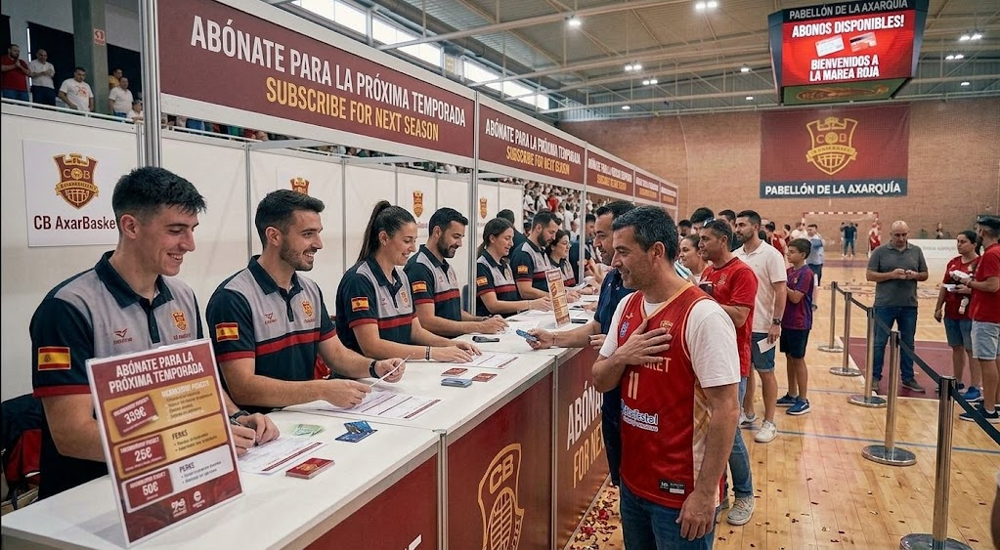

Prácticamente en las vísperas del partido definitivo, la junta directiva del CB AxarBasket no ha querido perder el tiempo y ha presentado de manera oficial las bases de su nueva campaña de captación de abonados de cara al próximo e ilusionante año. Bajo el ambicioso lema "El rugido de la Axarquía", la entidad se ha fijado el objetivo social de batir todos los registros históricos del club y alcanzar la cifra de los 1.500 socios abonados, convirtiendo el pabellón municipal en una auténtica olla a presión inexpugnable para los rivales.
Como principal medida de agradecimiento por el apoyo incondicional mostrado durante los últimos años, el presidente anunció una bonificación histórica: la congelación total de las tarifas de renovación para todos aquellos socios que mantengan su fidelidad y retiren su carnet antes del próximo 30 de junio, asumiendo el club el coste económico del salto de categoría. Por otra parte, para las nuevas altas se han diseñado atractivos paquetes de descuento familiar, abonos especiales para desempleados, tarifas reducidas para jubilados y un precio simbólico enfocado en los alumnos de las escuelas de cantera. "Queremos que el baloncesto sea el deporte del pueblo, que cada viernes venir al pabellón sea un plan familiar accesible y lleno de identidad", apuntó el director comercial en la presentación ante los medios de comunicación locales.
Hugo Ruiz - Periodista y analista experto, toda una eminencia - 12/06/2042